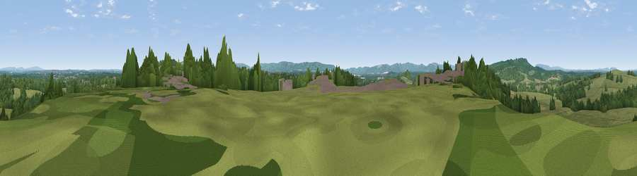

Viewpoint near Pulborough
#38354 in England · top 64% of its area beats it · near Pulborough · access?Where it is
The exact computed spot (TQ 05275 20225). Click the marker for map links.
Public access: no public right of way or access land is recorded at this exact spot — it may be on private land. Computed from Natural England's CRoW access layer and OpenStreetMap rights of way — not the legal definitive map. Always verify locally.
The view, rendered

A 360° render of this exact spot computed from the terrain model, tree cover and land cover — summer colours, afternoon light, calibrated against photographs of famous viewpoints. Real trees, hedges and buildings will differ in detail.
The panorama
Grey silhouette: terrain skyline in each direction (720 bearings, Earth curvature and refraction included). Dashed green: skyline with trees (+15 m) and buildings (+8 m) as obstacles. Blue strip: how far the ground is visible on each bearing.
Where the view opens
Wedge length = distance to the farthest visible ground on that bearing (vegetation-aware). Rings at 10, 25 and 50 km.
What fills the view
52% grassland · 28% woodland · 17% cropland · 3% built-up
Angular shares of the visible panorama (visual magnitude), not map area. Landscape diversity 0.48 (0–1 Shannon).
Key numbers
More beautiful places nearby
The staircase of upgrades: each row has a higher view potential than everything closer. Driving times are estimates from straight-line distance, calibrated against real road routing — check an actual route before setting out.
| Place | Direction | Drive | Score |
|---|---|---|---|
| Toat Hill | NNW · 1 km | ~4 min | 50.1 |
| Viewpoint near Stopham | WNW · 3 km | ~8 min | 65.4 |
| Viewpoint near Amberley | S · 8 km | ~16 min | 82.3 |
| Viewpoint near Storrington | SSE · 8 km | ~16 min | 83.9 |
| Westburton Hill | SW · 9 km | ~18 min | 84.2 |
| Bignor Hill | SW · 10 km | ~19 min | 84.4 |
| Viewpoint near Washington | SE · 12 km | ~22 min | 85.0 |
| Chanctonbury Ring | SE · 12 km | ~22 min | 87.0 |
50.97183, -0.50200 · source: screening · position refined by local search. Computed location — check access rights before visiting.